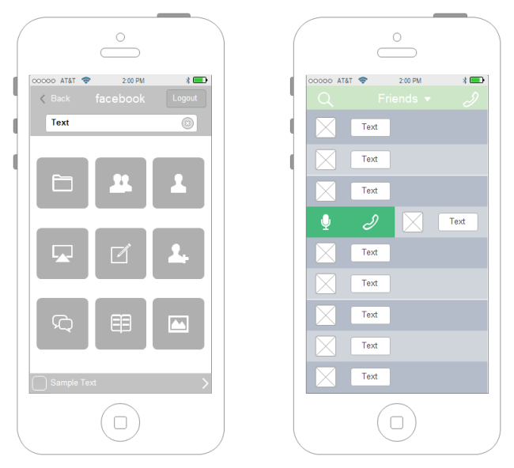
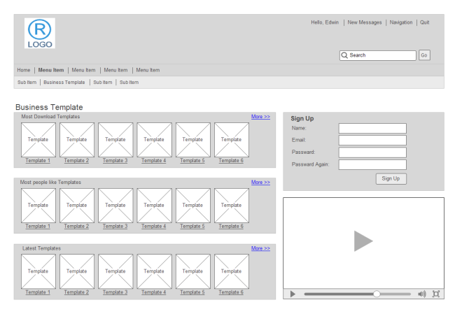
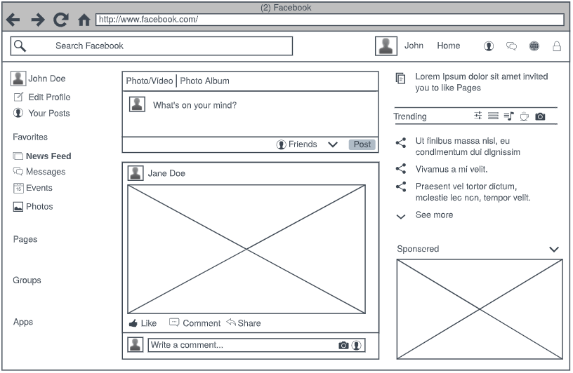

Un wireframe es una representación esquemática de una pantalla, sin elementos gráficos, que muestran contenido y comportamiento de las páginas.
Los Wireframes se crean con el fin de organizar los elementos para lograr un propósito en particular. El propósito suele estar informado por el objetivo empresarial y una idea creativa. Para los que quieren crear un sitio web o una interfaz de usuario, los wireframes son la base sobre la que se empieza a construir.
Características:
- Pueden ser dibujados a mano o creados con alguna aplicación computacional.
- Los Wireframes son sencillos diseños en blanco y negro que describen el tamaño y la ubicación específica de los elementos de la página, las características del sitio, las áreas de conversión y la navegación del sitio web o UI.
- No incluyen el color, la elección de la fuente, los logotipos o cualquier otro elemento de diseño real que se aleje de centrarse en la estructura del sitio.
- Se suele decir que los Wireframes son como el plano de una casa. Lo que vemos en ellos son los "huesos" de una página: el marco básico de cómo se va a configurar y cómo funciona.
Algunos Ejemplos:
  References: Edrawsoft · slideshare · Images by Picture-1 · Picture-2 · Picture-3